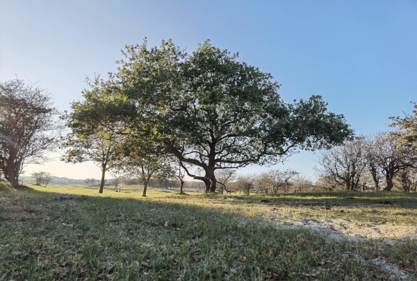
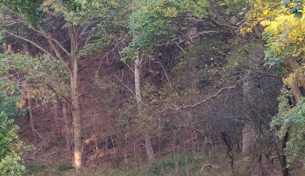

De hedendaagse crisis op velerlei gebied hebben velen aan het denken gezet over de richting waar het heen gaat met de wereld. En wat men zelf kan doen. Maar de problemen zijn globaal en zo allesomvattend dat er geen simpele oplossing is. Vertrouwen in de politiek verdwijnt. Dit leidt veelal tot moedeloosheid en een gevoel van machteloosheid.
Leven in een ecovillage is een manier om te beginnen bij jezelf, aan de basis. Tegelijkertijd kan een manier van wonen betrekking hebben op alle facetten in het leven: energie, voedsel, natuur, politiek, samenleven, economie, onderwijs, cultuur, religie en meer.
Het ecodorp kan ruimte bieden aan initiatieven op al deze gebieden. Het dorp staat expliciet open voor experimenten en pilotprojecten. Het kan fungeren als een proeftuin in een reeel bestaande situatie waar nieuwe realiteiten geschapen worden.
Het uiteindelijk doel van het ecovillage kan zijn het bereiken van autarkie, al zal dit waarschijnlijk enkel te bereiken zijn in samenwerking met een aantal andere dorpen, indien een groot genoeg netwerk gecreeerd kan worden.
Burorina Grondslagen
- Samenwerking inplaats van concurrentie.
- Overvloed inplaats van schaarste.
- Vrijheid inplaats van dwang.
Bouwvorm
Er hoeft niet een enkele soort bouwvorm toegepast te worden. Verschillende soorten woningen kunnen worden gerealiseerd. Er zijn wel een aantal uitgangspunten voor de bouwvorm:
- Natuurvriendelijk materiaal
- Geoptimaliseerd voor een klein energieverbruik
- Afgestemd op gebruik van hernieuwbare energie
Gezien de klimaatverandering en de bijbehorende stijging van de zeespiegel is het goed aandacht te besteden aan de mobiliteit van bouwwerken en faciliteiten. De bouwwerken zouden semi-permanent kunnen zijn, althans, mogelijk verplaatsbaar, of zelfs amfibisch.
Hernieuwbare energie
Met een energietransitie al reeds gaande, ligt het voor de hand dat de totale energiebehoefte van het dorp uit hernieuwbare energie moet komen. Mede vanuit de gedachte van een semi-permanente bouwwijze zouden installaties bij voorkeur makkelijk verhuisbaar moeten zijn.
Voedsel

Verspilling van voedsel, transport en verpakking zijn belangrijke problemen. Oplossing ligt in het ontwikkelen van een lokale economie, waar voedsel dicht bij huis wordt geproduceerd, op een natuurvriendelijke wijze. Voedselbos, permacultuur en biologische teelt zijn uitgangspunten. Indien het dorp voor een deel aan de eigen voedselbehoefte kan voorzien, is dat een groot pluspunt.
Geldloze Deeleconomie
Wanneer er een voldoende verscheidenheid is aan mensen kunnen er onderling diensten worden verleend aan elkaar of het dorp zonder dat er geldelijke vergoeding tegenover staat. Wanneer velen iets bijdragen aan het dorp kunnen er gemeenschappelijke voorzieningen worden gecreeerd waarvoor niet of nauwelijks betaald hoeft te worden. Dit proces kan zichzelf versterken doordat mensen hierdoor hun arbeid minder op de arbeidsmarkt hoeven te verkopen (men heeft minder geld nodig om te leven), waardoor men meer tijd heeft voor zichzelf en de leefomgeving.
Overvloed tegenover schaarste

De filosofie van het dorp moet er nadrukkelijk een zijn die uitgaat van overvloed, niet van schaarste. Schaarste is in feite een van naure weinig voorkomende omstandigheid. Schaarste wordt vooral gecreerd met als doel economische winst of politiek gewin, met als gevolg vervuiling, verspilling, conflict, ongelijkheid, stress, ongeluk en vele anderee negatieve effecten.
De aarde biedt een overvoed aan alles. Energie, voedsel, vruchtbaar land, alles is in ruime mate voorradig. Het is enkel nog niet ter plaatste beschikbaar, het moet op de juiste manier verdeelt (of verplaatst) worden, overgedragen of voor iedereen bruikbaar gemaakt worden.
Een belangrijke voorwaarde is wel, dat mensen met elkaar samenwerken inplaats van elkaar te beconcureren en tegen te werken. Dat kan als men de illusie van schaarste niet langer accepteert en zich niet langer laat manipuleren door machthebbers en politiek.